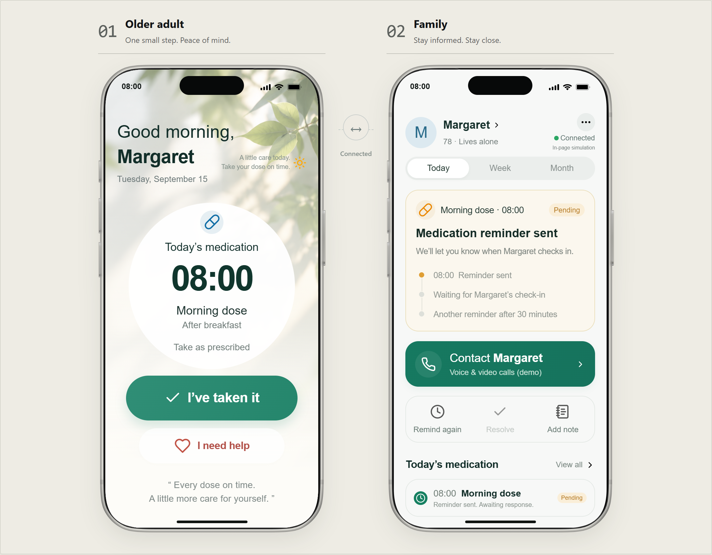
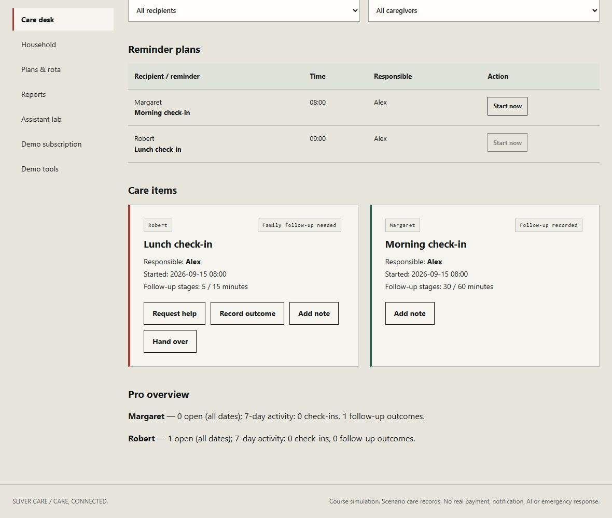
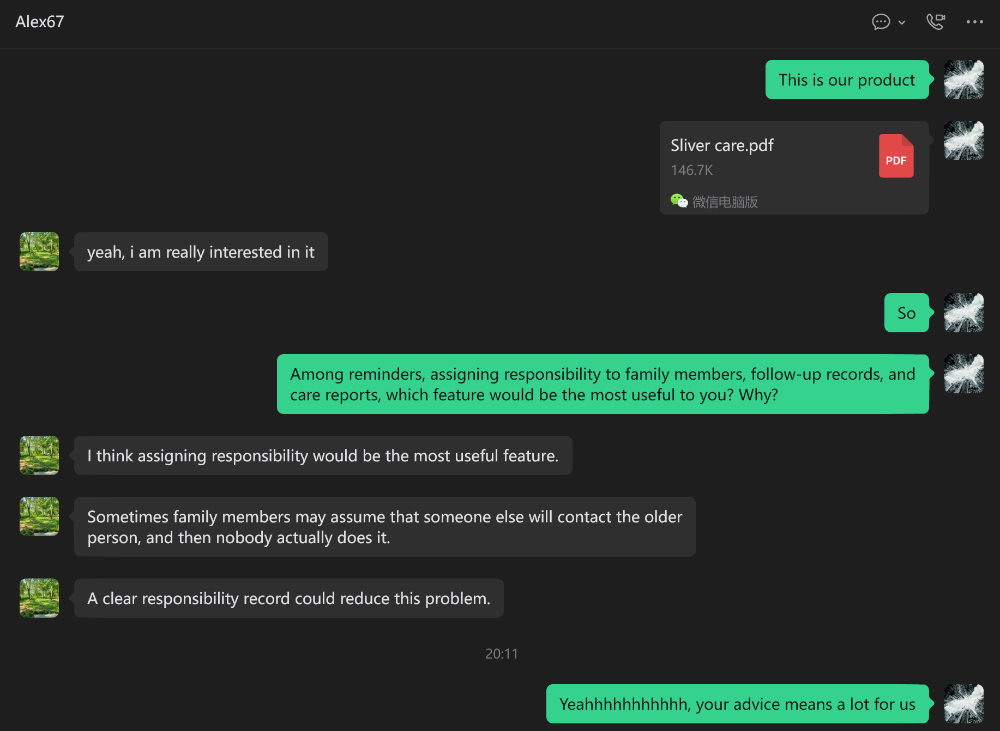
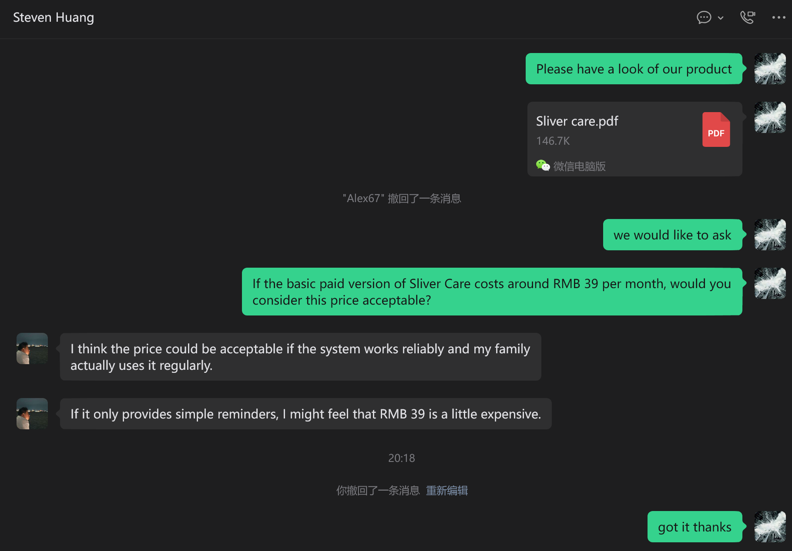
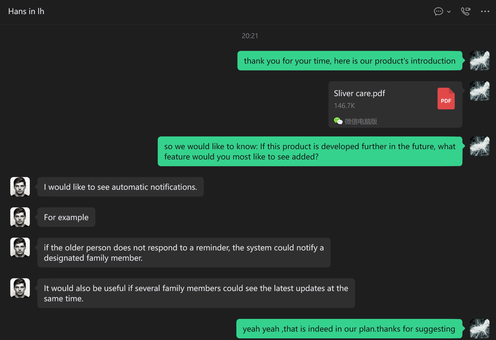
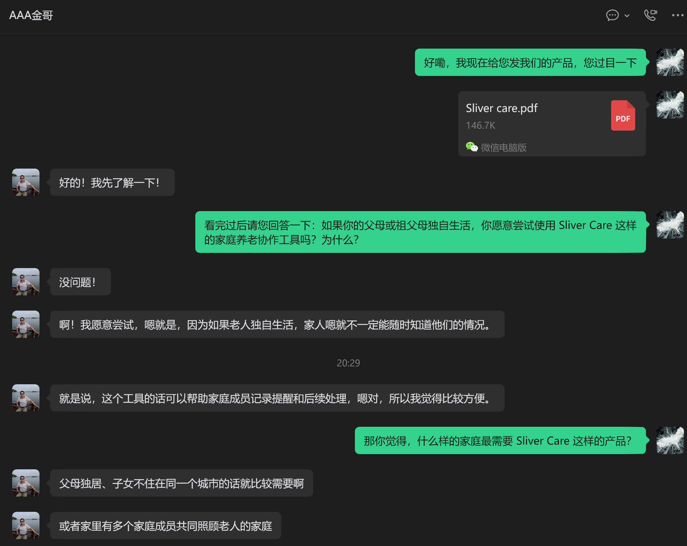

S01 Producible source
Owner-supplied course requirements. The text provides no calendar deadline.
Open sourceGROUP6 / UPDATED 22 SEPTEMBER 2026
Decision: Stop after the course. Eight personal consultations and ten organisational invitations.
Academic PDF: 8 main pages + 17 appendix pages. LaTeX source includes the editable report and evidence. Word is a content editing copy with the earlier layout.
| Member | Student number |
|---|---|
| XINYU LAI | 2023362046 |
| ZHENGYUAN QIU | 2023362027 |
| MINXUAN LI | 2023362005 |
| JINGHAO YU | 2023362059 |
| RUI ZHOU | 2023362052 |
| YIYANG FENG | 2023362038 |
| SHENGWEI HUANG | 2023362024 |
| TIANYI LI | 2023362026 |
Group6 has decided to stop advancing the venture after the course. The main reason is the team’s time and future resource commitments: the team cannot commit to ongoing development, maintenance and user support after the course. [C01]
Method and scope: the local care workflow and checkout use simulated care data and payments. Outreach now uses the team’s actual consultations and emails, supported by the supplied feedback summary, chat images and email-list image. Four chat screenshots and one email-list screenshot are selected for concise presentation; they are not the complete outreach archive. Previous course outreach simulations are excluded. The team’s decision after the course remains Stop.
The package provides an operating local family-care workflow. Twelve recorded automated functional experiments passed using controlled scenario data, with no external customer participants. [C02]
The report combines feedback from eight individuals consulted on 20–22 September 2026, ten organisational emails sent on 20 September as confirmed by the team, supplied screenshots, and dated local product experiments. Representative evidence is identified for each displayed example. [C03]
The next 90 days concern archiving the product and feedback, completing the team review and keeping the project inactive. The new comments help explain what customers may value, but do not establish sustained use, paid demand or reliable connected delivery.
Our initial problem hypothesis is that family members can lose track of who should follow up after a reminder and what happened after contact. The proposed customer is the adult child coordinating care for an independently living parent who can use a simple response interface. [C04]
The older adult and the family caregiver are intended users. The organising adult child is the proposed buyer. That distinction determines the design: a short response on one side, responsibility and a follow-up record on the other.
Early feedback supports exploring family responsibility and follow-up as a problem. One chat prioritises named responsibility, and another identifies parents living alone, distant children and several relatives sharing care. These qualitative comments do not establish how widespread the need is. [C05]
The two-phone example demonstrates a possible response and follow-up flow. The new feedback gives initial qualitative support to responsibility and record-keeping. The sample is small, recruitment is not documented, and comments after viewing an introduction are different from observed use.
An appropriate future test, only if the project is reopened, would observe a consenting family completing a specific handover without coaching, then ask for an explicit response to the quoted offer. Completion, confusion and the response would need dates and records. This is a proposed method, not a test already run.
A user receives a local browser application, sample care profiles, reminder plans, responsibility records and downloadable reports. It runs through a local server; the original two-phone example and the working household have separate histories. [C06]
The working sequence is to choose a recipient and responsible family member, start a reminder, record a self-reported response or help request, record a family outcome or handover, and generate a report from those saved actions. [C07]
The confirmed proposed family prices are Free ¥0, Plus ¥39/month or ¥390/year, Pro 5x ¥79/month or ¥790/year, and Pro 20x ¥99/month or ¥990/year. Annual totals are paid upfront in the proposal; the current offline evaluation costs ¥0. [C08]
| Plan | Monthly RMB | Annual RMB | Local capacity | AI templates per cycle |
|---|---|---|---|---|
| Free | 0 | 0 | 1 recipient / 1 family role | 0 |
| Plus | 39 | 390 | 2 / 4 | 20 |
| Pro 5x | 79 | 790 | 5 / 8 | 100 |
| Pro 20x | 99 | 990 | 5 / 8 | 400 |
The table capacities are offline product defaults. The Pro options have identical care features; 5x and 20x describe the monthly AI allowance relative to Plus. The assistant generates local templates rather than calling a live model. [C09]
Checkout is simulated and the actual charge is zero. Failure or cancellation does not activate a plan. A successful local activation enables paid-tier features, while quota exhaustion does not block the core care response. [C10]
For the cost model, one unit means one active paying family for one month. Its assumed variable cost is ¥18.19 in the base scenario. Actual development hours, staff costs and supplier quotations have not been recorded, so no measured cost to build the first app or serve a real family is claimed. [C11]
A check-in is a self-report; recording an outcome does not establish clinical safety. This edition has no connected family accounts, real notifications, live payment, medical monitoring or emergency response.
The proposed tiers address different needs. Plus at RMB 39/month supports everyday responsibility, multiple plans and report export. Pro 5x at RMB 79/month adds rota, backups, handovers and adjustable follow-up. Pro 20x at RMB 99/month retains the same Pro care features and adds 300 generations for RMB 20 more per month. One contact conditionally accepts RMB39/month if the service is reliable and used regularly; this does not establish a paid conversion. [C28]
Plus provides 20 successful local generations per monthly cycle, Pro 5x 100 and Pro 20x 400. All roles and recipients in a household share the counter. Each new successful generation, including regeneration, costs one use; failed, cancelled or invalid requests cost zero. Reading or saving an existing draft and exporting a care report cost zero. Unused allowance does not roll over. Plan changes preserve usage, while a new monthly demo cycle resets it and retains past drafts. Annual totals equal ten monthly fees but do not multiply the monthly allowance. [C29]
The current local evaluation is free. Cross-device family accounts, remote notifications and live AI remain proposed capabilities, with no launch date under the Stop decision. Proposed live AI uses would include weekly summaries, handover drafts and follow-up lists based on saved records, subject to family review. Current local templates already produce summaries and handover drafts containing open items. Neither a template nor a future model can verify actual medication intake or establish clinical safety.
The version comparison below uses the earliest retained screenshot available for this report and the current working household. The earlier picture shows one older-adult and family pair. The current view shows saved care items, named responsibility and distinct open and recorded-outcome states. [C12]


| Visible change | Earlier retained example | Current workspace |
|---|---|---|
| Role of screen | Illustrates a response flow | Operates saved care records |
| Responsibility | Single illustrated family pair | Recipient and responsible-person fields |
| Output | On-screen event history | Report containing entered outcomes and handover |
The verified report file contains the entered follow-up note and a handover, with 2,322 decoded characters and 2,329 UTF-8 bytes. Its content matches the report preview used in the download check. [C13]
Reproduce the product locally by running Start.cmd, opening Care workspace and following the demonstration script. Appendix B includes a report extract and evidence-file locations. No person outside the team appears using the product; no independent usability test is claimed. We cannot verify that the retained picture was the first-ever design.
On 20 September 2026, the coding assistant ran twelve automated functional experiments against a saved snapshot of the product rules. The evidence records each belief, procedure and result. These are implementation tests, not observations of market demand. [C14]
| Experiments | Belief and action | Observed result |
|---|---|---|
| E01–E02 | Complete Free follow-up; activate Plus and inspect the report | Outcome recorded and note included |
| E03–E04 | Exercise checkout failure, cancellation, duplication and annual totals | State preserved; one receipt; 390 / 790 / 990 quotes |
| E05–E07 | Exhaust AI quota; use Pro backup and handover; downgrade | Core response works; responsibility changes; history persists |
| E08–E09 | Age an open reminder eight days, then record an outcome | Open item retained; later outcome counted in its event period |
| E10 | Reset care with synthetic outreach and request fixtures | Both fixture records retained; not written to real browser log |
| E11–E12 | Cross midnight with a rota; tamper with a simulated receipt | Due-date owner selected; invalid charged receipt rejected |
A reconstructed period-only open-item rule counted zero open reminders after eight days even though one remained unresolved. The current all-date rule counted one and included it in the report. This experiment demonstrates why the reporting window must not hide open work. [C15]
A reconstructed full replacement reset retained zero outreach fixtures. The current care-only reset retained the one fixture and its unsent request. The fixture was synthetic and never entered the real outreach log. [C16]
These results support retaining all open work and preserving outreach during a care reset. They do not show that real families understand the interface. We also have no recorded timed presentation rehearsal or observed outside-user task completion, and do not substitute automated checks for either.
Fifteen additional automated checks recorded on 20 September 2026 cover nine scenario steps and six allowance contracts. All passed. The examples execute the same local product rules in isolated sample households. These checks supplement the original twelve experiments; they are not customer participants or evidence of willingness to pay. [C30]
The team-prepared feedback document contains eight bilingual question-and-answer themes, not a response-by-person dataset. It covers willingness to try, responsibility, ease of use, price, free evaluation, privacy, target households and proposed features. Four chat screenshots support selected themes; individual-level percentages cannot be calculated from this material. [C31]
| Belief explored | Action and available result | Implication |
|---|---|---|
| Families need clear responsibility | Shared product introduction; one chat prioritises named responsibility (S18) | Show responsibility and saved outcomes in the core demonstration |
| RMB39/month may be acceptable | One chat accepts conditionally on reliability and frequent use (S19) | Keep pricing proposed; reminders alone may not justify it |
| Connected coordination matters | One chat requests alerts and shared updates (S20) | Retain as proposed capabilities; delivery remains untested |
| Organisations will engage | Team sent ten invitations; no replies by 22 September (S23) | This channel has produced no response yet; silence does not establish rejection |
The revenue hypothesis is an optional subscription paid per family. The model assumes 70% Plus, 20% Pro 5x and 10% Pro 20x; within each plan, 60% pay monthly and 40% annually. Annual revenue is divided by 12 for monthly comparison. [C17]
| Input | Base assumption |
|---|---|
| Service, support and AI per paid family / month | ¥12.00 |
| Free households funded per paid household | 5 at ¥0.50 each |
| Processing allowance | 1% of recognised revenue |
| Equivalent monthly churn and replacement acquisition | 4% and ¥80 |
| Fixed operations per month | ¥30,000 |
| Active paying households | 800 |
The calculated monthly revenue per paid family is ¥49.47. Variable cost including replacement acquisition is ¥18.19, leaving contribution of ¥31.27. With ¥30,000 fixed monthly operations, break-even is 960 paid families; at 800 families the monthly result is a loss of ¥4,982.40. [C18]
Calculation: variable cost = 12 + (5 × 0.50) + (49.4666667 × 1%) + (4% × 80). Monthly result = paid families × contribution − fixed operations. Rounding occurs only for display.
Allocating fixed costs over 800 assumed paying families gives a total monthly cost of ¥55.69 per family. The model excludes initial development, launch costs, growth acquisition, financing and taxes. It does not establish the cost or time needed to acquire 800 families. [C19]
No supplier quote, measured support load, retention observation or sale validates these inputs. The arithmetic works as a scenario, while the business case remains unproven. We therefore use it to identify evidence we lack, rather than as a forecast that supports continuing.
The team confirms eight individual consultations on 20–22 September 2026 and product-experience invitations emailed to ten organisations on 20 September. Those emails included an MVP demonstration video and product introduction PDF. No organisational reply had been received as of the team update on 22 September. [C20]
| Activity / evidence | Count / period | Outcome and interpretation |
|---|---|---|
| Individual consultations | 8; 20–22 Sep 2026 | Four chat screenshots plus a thematic summary; no per-person response-rate estimate |
| Organisation invitations | 10; sent 20 Sep 2026 | No replies reported as of 22 Sep; six email rows shown |
| Price feedback | One visible RMB39/month response | Conditional acceptance; reminders alone may feel expensive |
| Purchase / pilot commitment | No supplied evidence | Stated interest is not a completed sale or trial |
| Team decision | Stop after the course | Archive feedback; stop due to team time and resource commitments |
The supplied chats show interest in trying the product, a preference for named responsibility, conditional acceptance of RMB39/month, and requests for automatic notifications and shared updates. The materials contain no completed purchase, deposit, agreed pilot or observed product trial. No-reply institutional contacts remain pending rather than classified as rejections. [C21]
For the requirement to make at least ten commercial offers, the team reports ten organisational product-experience invitations. The report presents a selected email-list screenshot rather than reproducing all correspondence. The eight individual consultations are recorded separately and are not automatically counted as eight additional commercial offers. [C22]
The practical lesson is to demonstrate named responsibility and saved follow-up before discussing AI. The conditional price response adds a clear requirement: usefulness depends on reliable delivery and regular household use. The notification request identifies a gap in the current local MVP. The absence of replies after the reported email outreach has yielded no institutional commitment so far.
The email-list preview includes greetings to Taikang Home, Xinrong Linbang and Xiaode Zhineng. These examples identify the intended addressee in the message greeting; the screenshot does not independently establish the mailbox’s organisational ownership, delivery or a partnership. All ten institutional contacts remain without a reported reply as of 22 September. [C33]
Earlier ten-record course simulations, including the four-interested, four-declined and two-pending split, are archived separately. They contribute zero contacts, responses or commitments to this updated actual-outreach account. [C32]
The eight consultations provide initial qualitative reactions. Recruitment, participant characteristics, independently usable task performance, repeat use and paid conversion remain unmeasured. The displayed chats are illustrative excerpts, not a quantitative distribution of opinions. Lack of institutional reply does not distinguish unread mail, low priority or lack of interest.
The functional evidence covers controlled local scenarios and a local browser. It does not establish cross-device delivery, real accounts, reliability in service, clinical effects or live billing. [C23]
The retained prototype screenshot provides a partial development history. We have no measured initial build cost, timed speaking rehearsal, completed customer purchase or agreed pilot. Feedback collection does not resolve live sync, notification reliability, security or service cost. These evidence limits are separate from the team’s main reason for stopping: time and future resource commitments.
| Period after the course ends | Stop plan | Condition |
|---|---|---|
| Days 1–30 | Archive the product, evidence, outreach register and final report with their method and source notes | No commercial launch or new promises |
| Days 31–60 | Complete the team review, record unresolved questions and keep the project inactive | No assumed sales, recruitment or development commitment |
| Days 61–90 | Keep the project stopped; no further development or launch is scheduled | No new development, recruitment or launch promises |
The course requires one team submission, a report of no more than 20 pages excluding the appendix, and a seven-minute presentation in four prescribed parts. The supplied final instructions do not state a calendar deadline. [C24]
The 90-day table is a proposed closure and review plan consistent with Stop. It is not evidence that actions have already occurred. Actual Blackboard submission remains a team action.
This register covers the report narrative, tables, captions and identities. Actual outreach is documented through team confirmations, the supplied feedback summary and screenshots. Observed screenshot content is separated from unshown details, estimates, model assumptions and proposed actions. Earlier fictional outreach is archived and excluded. No clinical-effect or representative market claims are made.
Group6 has decided to stop advancing the venture after the course. The main reason is the team’s time and future resource commitments: the team cannot commit to ongoing development, maintenance and user support after the course.
Sources: S02
decision and decisionScope
The package provides an operating local family-care workflow. Twelve recorded automated functional experiments passed using controlled scenario data, with no external customer participants.
Sources: S04; S05
experimentCount, passed, scope and E01–E12
The report combines feedback from eight individuals consulted on 20–22 September 2026, ten organisational emails sent on 20 September as confirmed by the team, supplied screenshots, and dated local product experiments. Representative evidence is identified for each displayed example.
Sources: S17; S18; S19; S20; S21; S22; S23; S24
Feedback document, four chat images, email list and team confirmation
Our initial problem hypothesis is that family members can lose track of who should follow up after a reminder and what happened after contact. The proposed customer is the adult child coordinating care for an independently living parent who can use a simple response interface.
Sources: S17; S18; S21
Problem hypothesis and qualitative comments about responsibility and intended households
Early feedback supports exploring family responsibility and follow-up as a problem. One chat prioritises named responsibility, and another identifies parents living alone, distant children and several relatives sharing care. These qualitative comments do not establish how widespread the need is.
Sources: S18; S21; S23
Two supplied chat screenshots and consultation context
A user receives a local browser application, sample care profiles, reminder plans, responsibility records and downloadable reports. It runs through a local server; the original two-phone example and the working household have separate histories.
Sources: S05; S06
newState, saveSchedule, report; browser workspace observation
The working sequence is to choose a recipient and responsible family member, start a reminder, record a self-reported response or help request, record a family outcome or handover, and generate a report from those saved actions.
Sources: S04
E01, E02, E06
The confirmed proposed family prices are Free ¥0, Plus ¥39/month or ¥390/year, Pro 5x ¥79/month or ¥790/year, and Pro 20x ¥99/month or ¥990/year. Annual totals are paid upfront in the proposal; the current offline evaluation costs ¥0.
Sources: S02; S05; S04
Prior owner pricing carried in PLANS; E04 totals. Prices are proposals for a future service.
The table capacities are offline product defaults. The Pro options have identical care features; 5x and 20x describe the monthly AI allowance relative to Plus. The assistant generates local templates rather than calling a live model.
Sources: S05
PLANS and generate
Checkout is simulated and the actual charge is zero. Failure or cancellation does not activate a plan. A successful local activation enables paid-tier features, while quota exhaustion does not block the core care response.
Sources: S04
E02–E05
For the cost model, one unit means one active paying family for one month. Its assumed variable cost is ¥18.19 in the base scenario. Actual development hours, staff costs and supplier quotations have not been recorded, so no measured cost to build the first app or serve a real family is claimed.
Sources: S10
assumptions, calculated.variableCost and excluded
The version comparison below uses the earliest retained screenshot available for this report and the current working household. The earlier picture shows one older-adult and family pair. The current view shows saved care items, named responsibility and distinct open and recorded-outcome states.
Sources: S03; S07; S14
Earlier retained prototype, original workspace capture and fresh full-resolution source S14; the report enlarges the open care-item detail.
The verified report file contains the entered follow-up note and a handover, with 2,322 decoded characters and 2,329 UTF-8 bytes. Its content matches the report preview used in the download check.
Sources: S06; S09
download observation, character count and SHA-256
On 20 September 2026, the coding assistant ran twelve automated functional experiments against a saved snapshot of the product rules. The evidence records each belief, procedure and result. These are implementation tests, not observations of market demand.
Sources: S04; S12
recordedAt, executor, results and reproduction script
A reconstructed period-only open-item rule counted zero open reminders after eight days even though one remained unresolved. The current all-date rule counted one and included it in the report. This experiment demonstrates why the reporting window must not hide open work.
Sources: S04
E08. The rejected rule is explicitly a reconstruction.
A reconstructed full replacement reset retained zero outreach fixtures. The current care-only reset retained the one fixture and its unsent request. The fixture was synthetic and never entered the real outreach log.
Sources: S04
E10. Reconstructed rejected rule compared with current reset.
The revenue hypothesis is an optional subscription paid per family. The model assumes 70% Plus, 20% Pro 5x and 10% Pro 20x; within each plan, 60% pay monthly and 40% annually. Annual revenue is divided by 12 for monthly comparison.
Sources: S10
assumptions; formula in S12
The calculated monthly revenue per paid family is ¥49.47. Variable cost including replacement acquisition is ¥18.19, leaving contribution of ¥31.27. With ¥30,000 fixed monthly operations, break-even is 960 paid families; at 800 families the monthly result is a loss of ¥4,982.40.
Sources: S10
calculated values
Allocating fixed costs over 800 assumed paying families gives a total monthly cost of ¥55.69 per family. The model excludes initial development, launch costs, growth acquisition, financing and taxes. It does not establish the cost or time needed to acquire 800 families.
Sources: S10
calculated.costIncludingFixedAt800 and excluded
The team confirms eight individual consultations on 20–22 September 2026 and product-experience invitations emailed to ten organisations on 20 September. Those emails included an MVP demonstration video and product introduction PDF. No organisational reply had been received as of the team update on 22 September.
Sources: S22; S23; S24
Team count/date/attachment confirmation; six visible email rows
The supplied chats show interest in trying the product, a preference for named responsibility, conditional acceptance of RMB39/month, and requests for automatic notifications and shared updates. The materials contain no completed purchase, deposit, agreed pilot or observed product trial. No-reply institutional contacts remain pending rather than classified as rejections.
Sources: S18; S19; S20; S21; S23
Visible chat responses and owner-reported institutional outcome
For the requirement to make at least ten commercial offers, the team reports ten organisational product-experience invitations. The report presents a selected email-list screenshot rather than reproducing all correspondence. The eight individual consultations are recorded separately and are not automatically counted as eight additional commercial offers.
Sources: S13; S22; S23; S24
Course requirement compared with invitation content and available proof
The functional evidence covers controlled local scenarios and a local browser. It does not establish cross-device delivery, real accounts, reliability in service, clinical effects or live billing.
Sources: S04; S05; S06
Experiment scope and local implementation boundary
The course requires one team submission, a report of no more than 20 pages excluding the appendix, and a seven-minute presentation in four prescribed parts. The supplied final instructions do not state a calendar deadline.
Sources: S01
Report and presentation requirements
The page-one team roster is Group6 with the eight names and student numbers shown.
Sources: S02
members array. Supplied by the project owner; not independently verified against university records.
The model input table uses service/support/AI 12, five free families at 0.50, processing 1%, churn 4%, acquisition 80, fixed operations 30000 and 800 paying families.
Sources: S10
assumptions object. These are not measured customer data or supplier quotations.
No completed outside-user task observation or timed speaking rehearsal is included in the report evidence. The six-minute-thirty-second presentation schedule is a plan.
Sources: S04; S06
Scope of experiment and browser records. The speaker schedule is a future rehearsal aid, not a measured result.
The proposed tiers address different needs. Plus at RMB 39/month supports everyday responsibility, multiple plans and report export. Pro 5x at RMB 79/month adds rota, backups, handovers and adjustable follow-up. Pro 20x at RMB 99/month retains the same Pro care features and adds 300 generations for RMB 20 more per month. One contact conditionally accepts RMB39/month if the service is reliable and used regularly; this does not establish a paid conversion.
Sources: S05; S15; S19
Plan rules and conditional price response
Plus provides 20 successful local generations per monthly cycle, Pro 5x 100 and Pro 20x 400. All roles and recipients in a household share the counter. Each new successful generation, including regeneration, costs one use; failed, cancelled or invalid requests cost zero. Reading or saving an existing draft and exporting a care report cost zero. Unused allowance does not roll over. Plan changes preserve usage, while a new monthly demo cycle resets it and retains past drafts. Annual totals equal ten monthly fees but do not multiply the monthly allowance.
Sources: S05; S15; S16
generate, nextCycle, activate and resetPurchase; Q01-Q06 in value-checks.json
Fifteen additional automated checks recorded on 20 September 2026 cover nine scenario steps and six allowance contracts. All passed. The examples execute the same local product rules in isolated sample households. These checks supplement the original twelve experiments; they are not customer participants or evidence of willingness to pay.
Sources: S15; S16
15 results and source hashes in value-checks.json
The team-prepared feedback document contains eight bilingual question-and-answer themes, not a response-by-person dataset. It covers willingness to try, responsibility, ease of use, price, free evaluation, privacy, target households and proposed features. Four chat screenshots support selected themes; individual-level percentages cannot be calculated from this material.
Sources: S17; S18; S19; S20; S21
Eight numbered topics and four screenshots
Earlier ten-record course simulations, including the four-interested, four-declined and two-pending split, are archived separately. They contribute zero contacts, responses or commitments to this updated actual-outreach account.
Sources: S11; S24
Archived content file and current register
The email-list preview includes greetings to Taikang Home, Xinrong Linbang and Xiaode Zhineng. These examples identify the intended addressee in the message greeting; the screenshot does not independently establish the mailbox’s organisational ownership, delivery or a partnership. All ten institutional contacts remain without a reported reply as of 22 September.
Sources: S22; S24. Email-list rows 4–6.
Owner-supplied course requirements. The text provides no calendar deadline.
Open sourceOwner-supplied Group6 identities, Stop decision, pricing and confirmation that the teacher permits formal records within the course simulation. Teacher permission is owner-reported.
Open sourceEarliest retained screenshot used in this report. Shows the two-phone example; capture date and first-ever version status are not established.
Open source12 automated functional experiments on 20 September 2026. Controlled scenario fixtures, no external participants. E08 and E10 compare reconstructed rejected rules with current rules.
Open sourceExact tested product rules and pricing. It establishes implementation, not demand or medical reliability.
Open sourceLocal browser observations and report-download comparison. Identifies dates, actions, counts and limitations.
Open sourceRetained screenshot of the working care desk from the 20 September 2026 local demonstration. Course scenario records; no outside user is shown.
Open sourceText read directly from the actual report preview on 20 September 2026; compare with the downloaded file S09.
Open sourceActual downloaded local report from the course demonstration. It is not a medical record.
Open sourceReproducible arithmetic from explicit assumptions. Neither cost quotes nor observed customer behaviour.
Open sourceArchived 20 September course exercise. Synthetic contact identities and responses are excluded from the actual outreach and current commitment counts.
Open sourceRun with Node.js to reproduce experiments against the supplied source snapshot. Results go to evidence-rerun.
Open sourceOriginal owner-supplied course announcement requiring at least ten real offers and an outreach record.
Open sourceActual existing local workspace, recaptured on 20 September 2026 at 1180 by 1000 pixels. No record changes. The report and slides crop and enlarge the open care item; the complete capture is retained here.
Open sourceFifteen recorded automated checks: nine care-scenario steps and six allowance contracts. Local controlled fixtures, no external participants; original experiment records remain unchanged.
Open sourceReproduces the checks against product-core.js and plan-value.js. The default output goes to evidence-rerun; it does not change browser records or send messages.
Open sourceEight bilingual question-and-answer themes supplied by the team. Chinese answers are labelled examples in the document; it is a thematic summary, not eight individually attributed transcripts.
Open sourceProduct PDF shared; contact prioritises named responsibility. A 20:11 marker is visible, with no calendar date. Consultation range is confirmed separately in S23.
Open sourceProduct PDF and RMB39/month question visible. Acceptance is conditional on reliability and regular use; simple reminders could feel expensive. A 20:18 marker is visible, no calendar date.
Open sourceContact requests automatic notifications and shared current updates. A 20:21 marker is visible, no calendar date. These features remain proposed.
Open sourceContact expresses willingness to try and identifies households with parents living alone, distant children or shared caregiving. A 20:29 marker is visible, no calendar date.
Open sourceSix email-list rows with product experience invitation subjects are visible. This is a representative selection from the ten-organisation campaign, not the full correspondence archive. Three visible greeting names are included as examples, not responding partners.
Open sourceOwner confirms eight individuals consulted on 20–22 September 2026 and ten organisations emailed on 20 September with MVP video and product PDF; no institutional replies reported by 22 September.
Open source18 separate entries: eight consultations and ten organisation emails. The displayed screenshots are representative selections. Individual discussions are not automatically counted as commercial offers.
Open sourceFour chat images and one email-list image supplied by the team. Open originals to inspect the full detail.



